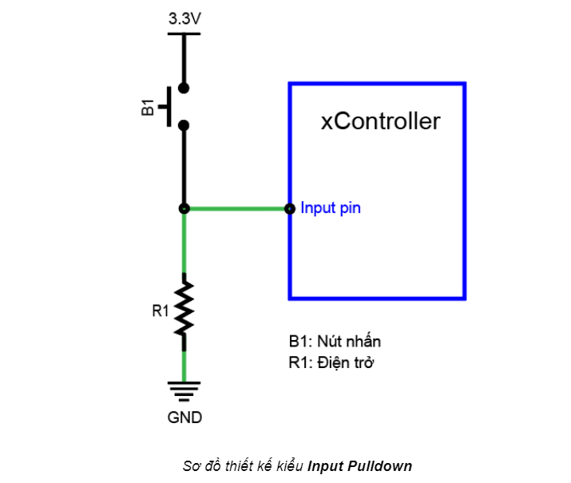
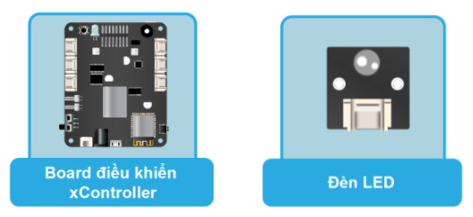

4. Bài học 3: Nhấn nút bật đèn LED
Mục tiêu
Trong bài học này, bạn sẽ tìm hiểu về tín hiệu Digital Input và học cách điều khiển đèn LED bằng nút nhấn, thay vì tự động bật tắt LED đơn giản như trong bài học trước.
Kiến thức mới
Tín hiệu Digital Input
Ngược với tín hiệu Digital Output là tín hiệu Digital Input. Bạn sẽ dùng Digital Input khi chân IO nối với các module xuất tín hiệu HIGH (3.3V) hoặc LOW (0V), ví dụ như nút nhấn.
Để biết khi nút được nhấn là HIGH hay LOW, chúng ta cần tìm hiểu thiết kế của module nút nhấn mà chúng ta đang sử dụng. Sơ đồ thiết kế của module nút nhấn:
{kind=link}
Ta thấy, chân tín hiệu đầu ra của nút nhấn được nối với input pin của xController (đường màu xanh lá).
Ở trạng thái bình thường chưa được nhấn, chân tín hiệu này được nối với nguồn điện dương 3.3V thông qua một điện trở R1, khi đó, tín hiệu này có giá trị là HIGH (3.3V).
Khi nút được nhấn, mạch đóng lại, chân tín hiệu này được nối thẳng với nguồn điện âm (GND, Ground) thay vì 3.3V (do điện trở R1 cản trở) nên tín hiệu sẽ có giá trị là LOW (0V).

Kiểu thiết kế như trên còn được gọi là Input Pullup (điện trở kéo lên 3.3V). Một kiểu thiết kế khác ngược lại là Input Pulldown, có sơ đồ như sau:
{kind=link}
Với thiết kế này, chân IO tín hiệu mặc định khi chưa nhấn nút sẽ được nối với GND (đường màu xanh lá) và có giá trị ở mức LOW (0V). Khi nút được nhấn, chân IO sẽ được nối thẳng lên 3.3V và có giá trị là HIGH. Khi làm việc với các module, bạn cần hiểu rõ cách thiết kế của chúng, từ đó chọn cách xử lý đúng tín hiệu trả về.
Thiết bị cần sử dụng
{kind=link}
Kết nối phần cứng

Cả LED và nút nhấn đều sử dụng tín hiệu Digital, nên 2 module này sẽ được kết nối với cổng giao tiếp Digital.
Viết chương trình
Mở phần mềm Arduino IDE.
Copy đoạn code sau, click vào nút Verify để kiểm tra lỗi chương trình. Sau khi biên dịch không báo lỗi, bạn có thể nạp đoạn code vào board.
int LEDPin = D1_1;
int buttonPin = D2_1;
int buttonState = 0;
void setup() {
pinMode(LEDPin, OUTPUT);
pinMode(buttonPin, INPUT);
}
void loop() {
// đọc trạng thái của nút nhấn
buttonState = digitalRead(buttonPin);
// kiểm tra xem nút có được nhấn không
// nếu nút được nhấn thì giá trị là LOW
if (buttonState == LOW) {
// bật đèn LED
digitalWrite(LEDPin, HIGH);
} else {
// tắt đèn LED
digitalWrite(LEDPin, LOW);
}
}
Giải thích chương trình
int LEDPin = D1_1;
int buttonPin = D2_1;
int buttonState = 0;
Như trong bài trước, ta khai báo các biến để lưu thông tin chân IO đã kết nối với module đèn LED và nút nhấn. Do nút nhấn được nối với cổng 2 trên board và chỉ dùng 1 đường tín hiệu Digital, nên ta sử dụng giá trị là D2_1.
Ngoài ra, ta cũng khai báo 1 biến có tên là buttonState để chứa trạng thái hiện tại của nút nhấn, dùng để xử lý trong chương trình chính.
pinMode(LEDPin, OUTPUT);
Câu lệnh này chúng ta đã tìm hiểu trong bài trước, giúp cấu hình chân IO nối với module LED là OUTPUT để có thể điều khiển bật tắt LED được.
pinMode(buttonPin, INPUT);
Tương tự, chúng ta cấu hình cho nút nhấn là INPUT. Ngược với mode OUTPUT, mode INPUT là để xController nhận tín hiệu từ nút nhấn thay vì xuất tín hiệu để điều khiển.
buttonState = digitalRead(buttonPin);
Câu lệnh này đọc tín hiệu Digital từ một chân IO được chỉ định. Kết quả trả về sẽ là mức HIGH hoặc LOW, tùy theo nút có được nhấn hay không.
if (buttonState == LOW) {
// bật đèn LED
digitalWrite(LEDPin, HIGH);
} else {
// tắt đèn LED
digitalWrite(LEDPin, LOW);
}
Để xử lý tín hiệu đọc được, đoạn code này sử dụng một cú pháp rất phổ biến trong lập trình là câu lệnh kiểm tra điều kiện if…else.... Câu lệnh điều kiện cho phép chúng ta kiểm tra một điều kiện là đúng hay sai, và tùy theo kết quả đúng sai mà những khối lệnh liên quan sẽ được thực hiện.
Câu lệnh if...else… có cú pháp đầy đủ như sau:
if (condition1) {
// do Thing A
}
else if (condition2) {
// do Thing B
}
else {
// do Thing C
}
Ở cú pháp trên, chương trình sẽ kiểm tra điều kiện condition1 đầu tiên:
Nếu
condition1đúng: thực hiện các dòng lệnh trong phần “// do Thing A”Nếu
condition1sai: chương trình sẽ tiếp tục kiểm tra điều kiệncondition2:Nếu
condition2 đúng, thực hiện các lệnh trong nhóm “// do Thing B.Nếu
condition2 sai, chương trình sẽ thực hiện các lệnh trong nhóm cuối cùng là “// do Thing C”.
Có thể sử dụng nhiều hơn 1 điều kiện trong câu lệnh if… else…
Theo đó, trong chương trình bật tắt đèn LED ở trên, chương trình sẽ kiểm tra xem kết quả trạng thái nút nhấn có là LOW (nút được nhấn) hay không. Nếu trạng thái của nút nhấn đang là LOW, đèn LED sẽ được bật và ngược lại (trạng thái ở mức HIGH, nút không được nhấn), đèn LED sẽ tắt.
Bạn hãy thử chạy chương trình, nhấn nút và quan sát kết quả đèn LED.